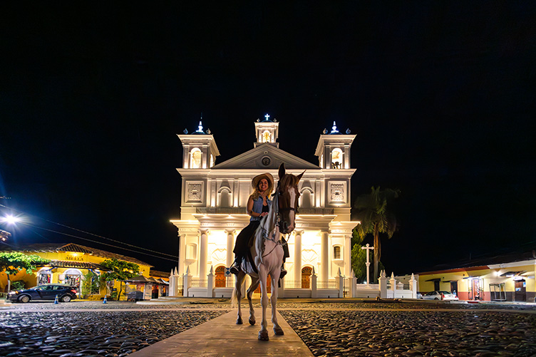
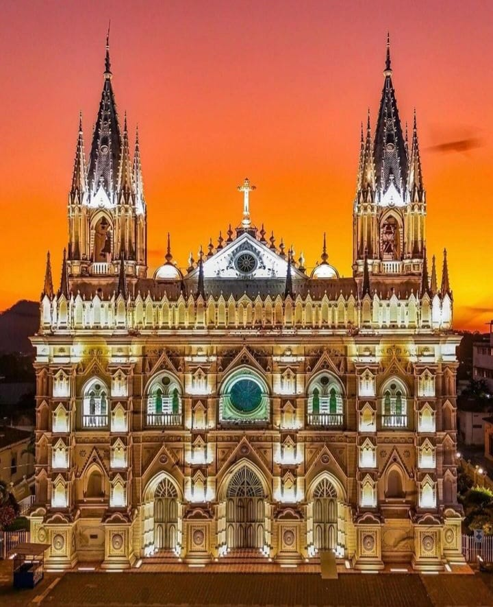

Suchitoto
Suchitoto es una pintoresca y histórica ciudad ubicada en el departamento de Cuscatlán, a unos 47 kilómetros de San Salvador. Este lugar es conocido como una joya colonial de El Salvador por sus calles empedradas, arquitectura bien conservada y rica vida cultural, siendo un destino ideal para los turistas interesados en historia, arte y naturaleza. Suchitoto es un destino ideal para quienes buscan combinar la tranquilidad de un entorno natural, la historia y una rica vida cultural en un solo lugar.

Catedral de Santa Ana
La Catedral de Santa Ana es uno de los edificios religiosos más impresionantes y emblemáticos de El Salvador. Se encuentra en la ciudad de Santa Ana, en el occidente del país, y es un importante símbolo arquitectónico y cultural. Su diseño gótico y neogótico la hace única en la región, siendo una atracción principal para locales y turistas. La Catedral de Santa Ana es uno de los sitios más bellos y de mayor relevancia histórica y arquitectónica en El Salvador, siendo una parada imperdible para aquellos interesados en la historia, la arquitectura y la espiritualidad del país.

Centro Histórico San Salvador